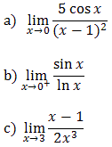

⠀
Jesteś tutaj:
Studia
→
Granica funkcji
→
Zadania na obliczanie granicy funkcji
◀ Reguła de l'Hospitala
Pochodne ▶
Zadania na obliczanie granicy funkcji
Więcej zadań z liczenia granic funkcji znajduje się na stronie:
Obliczanie granic - przykłady
Regule de l'Hospitala
Oblicz granice:
\(\lim_{x \to \infty} \left( \sqrt{x^2+1}-\sqrt{x^2-1} \right)\)
\(\lim_{x \to \infty} \left( \sqrt{x^2+1}-\sqrt{x^2-3x} \right)\)
\(\lim_{x \to -\infty} \frac{1+5x}{\sqrt{x^2+3}+\sqrt{2x^2-7x}}\)
Oblicz granicę: \(\lim_{x \to +\infty} \left( \sqrt[3]{x(x+1)^2}-\sqrt[3]{x(x-1)^2} \right)\)
\(\frac{4}{3}\)
Oblicz granicę funkcji \(f(x)=5x^3\) w punkcie \(x_0=-2\).
Oblicz granicę funkcji \(f(x)=3x^2-2x+1\) w punkcie \(x_0=5\).
Oblicz granicę funkcji

Oblicz granicę \(\lim_{x \to -1}\frac{x+1}{3x^2-3} \).
Leżeli \(\lim_{x \to \infty} \frac{(px+5)^3}{10x^3-5x^2+1}=-4\), to
A.
\( p=-2\sqrt[3]{5} \)
B.
\( p=-2\sqrt{10} \)
C.
\( p=-\sqrt[3]{\frac{10}{4}} \)
D.
\( p=-40 \)
A
◀ Reguła de l'Hospitala
Pochodne ▶